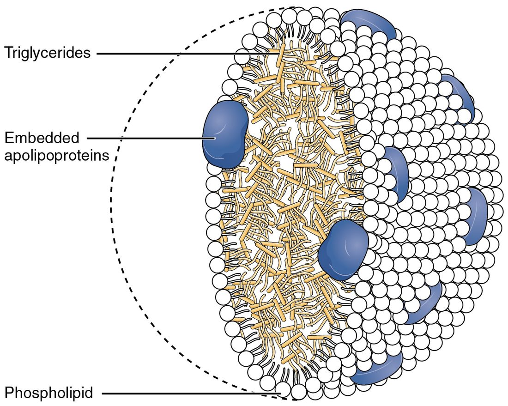

Glucose is only part of the story. Most of the energy you store is fat, and every day you break down and rebuild a few hundred grams of protein. This page covers fat metabolism from storage to ATP: lipolysis, beta oxidation, ketone bodies and ketogenesis, and the building of fat (lipogenesis); how lipoproteins such as LDL and HDL carry fat and cholesterol in the blood; and protein metabolism: how amino acids are broken down and how the urea cycle turns their nitrogen into a waste your kidneys can excrete.
Fat is your main energy store
A lean 70 kg adult carries about 12 kg of fat. At 9 kcal per gram, that is roughly 100,000 kcal, enough to fuel several weeks without food. The same person's glycogen, about 500 g in liver and muscle, holds about 2,000 kcal: less than one day's needs.
Fat is stored as triglycerides inside adipocytes, the fat cells of adipose tissue. To be used, it has to be released from those cells, carried in the blood, taken into mitochondria and broken down to acetyl CoA, which enters the same citric acid cycle as glucose does. The route is in Figure 1.
Lipolysis: releasing stored fat
Lipolysis (lip- = fat, -lysis = splitting) is the hydrolysis of stored triglycerides into glycerol and fatty acids. Enzymes called lipases, inside the adipocyte, remove the three fatty acids one at a time, adding a water molecule at each bond.
- Fatty acids leave the adipocyte and travel in the blood bound to albumin, which carries these water-insoluble molecules. Heart, skeletal muscle, liver and kidney cells take them up and burn them.
- Glycerol dissolves in plasma and travels to the liver, which can use it to make glucose by gluconeogenesis.
Lipolysis is set by hormones:
- Switched on by epinephrine and norepinephrine (through beta receptor proteins, cyclic AMP and protein kinase A), and more slowly by cortisol and growth hormone. Exercise, stress and a long gap since your last meal all raise it.
- Switched off by insulin, even at low levels. After a meal, insulin rises and fatty acid release from fat falls within minutes.
That insulin brake is why fat breakdown runs out of control in untreated type 1 diabetes, as you will see below.
Beta oxidation: fatty acids to acetyl CoA
A typical fatty acid, palmitic acid, is a chain of 16 carbons. Beta oxidation (also written β-oxidation; also called fatty acid oxidation) cuts it into two-carbon pieces of acetyl CoA, inside the mitochondrion.
- Activation. In the cytosol, the fatty acid is joined to coenzyme A. This costs the equivalent of 2 ATP, once per fatty acid.
- Entry. The inner mitochondrial membrane does not let the activated fatty acid through. It is passed across on a carrier molecule called carnitine, then joined to CoA again inside the matrix.
- One turn of beta oxidation. Four enzyme steps oxidize the third carbon from the CoA end, the beta carbon (beta = second letter of the Greek alphabet: the carbon next to the one bonded to CoA is alpha, and the next is beta). Each turn makes 1 FADH2 and 1 NADH, and cuts off 1 acetyl CoA. The fatty acid left behind is two carbons shorter.
- Repeat. The shortened chain goes around again. A 16-carbon chain needs 7 turns, and the last turn leaves two acetyl CoA, so it yields 8 acetyl CoA in all.
The acetyl CoA enters the citric acid cycle, and the NADH and FADH2 feed the electron transport chain. Every step after activation happens in the mitochondrion and depends on the electron transport chain to regenerate NAD+ and FAD. So fat can be burned only with oxygen: there is no anaerobic route for fat.
Worked example: ATP from one palmitic acid
Problem. How much ATP does complete oxidation of one 16-carbon palmitic acid yield? Use 2.5 ATP per NADH, 1.5 per FADH2 and 10 per acetyl CoA passed through the citric acid cycle.
- Count the turns. 16 carbons ÷ 2 = 8 acetyl CoA, made in 16 ÷ 2 − 1 = 7 turns.
- Carriers from beta oxidation. 7 FADH2 × 1.5 = 10.5 ATP; 7 NADH × 2.5 = 17.5 ATP. Subtotal 28 ATP.
- Acetyl CoA through the citric acid cycle. 8 × 10 = 80 ATP.
- Subtract the activation cost. 28 + 80 − 2 = 106 ATP.
- Compare with glucose. Glucose gives about 32 ATP from 6 carbons, about 5.3 per carbon. Palmitic acid gives 106 from 16 carbons, about 6.6 per carbon. Its carbons are less oxidized to start with, so each has more electrons to hand to the chain.
Answer. About 106 ATP per palmitic acid.
Two tissues use little or no fatty acid. Red blood cells have no mitochondria. The brain burns little fatty acid. Fatty acids do reach it, but its neurons carry out very little beta oxidation, so they rely on glucose. That is why, when food is scarce, the liver's next pathway matters so much.
Ketogenesis: ketone bodies from acetyl CoA
When fat breakdown is fast, the liver's mitochondria make more acetyl CoA than their citric acid cycle can take. At the same time, the liver is drawing oxaloacetate off to make glucose, so there is less oxaloacetate to accept acetyl groups. Acetyl CoA builds up, and the liver turns it into ketone bodies.
Ketogenesis (-genesis = making) is the liver's conversion of acetyl CoA into ketone bodies, in its mitochondria (Figure 2):
- Two acetyl CoA join to make a four-carbon molecule.
- A third acetyl CoA is added and then removed again, releasing acetoacetate, the first ketone body.
- Much of the acetoacetate gains two hydrogens (from NADH) to become beta-hydroxybutyrate, the main ketone body in the blood.
- A small amount of acetoacetate loses CO2 on its own, forming acetone. Acetone is volatile and leaves in the breath, giving it a fruity smell.
![A reaction pathway drawn as chemical structures from left to right. Two acetyl CoA molecules join to form acetoacetyl CoA, a four-carbon chain still attached to coenzyme A. Several arrows lead to a six-carbon molecule labeled beta-hydroxy-beta-methylglutaryl CoA, or HMG CoA. Removing the part attached to coenzyme A leaves acetoacetate, a four-carbon molecule with a carboxylate group at one end and a ketone group near the other. Adding two hydrogen atoms to that ketone group turns acetoacetate into beta-hydroxybutyrate.](../figures/os-24-14.jpg)
The name "ketone body" comes from acetoacetate and acetone, which have a ketone group (a carbon double-bonded to an oxygen in the middle of a chain). Beta-hydroxybutyrate has none, but it is counted with them.
Who uses them
The liver makes ketone bodies but cannot use them: it lacks the enzyme that turns acetoacetate back into acetyl CoA. So it exports them. Heart, skeletal muscle and kidney cells take them up, turn them back into acetyl CoA and burn them. After a few days without food, the brain does too, and ketone bodies then supply much of its energy. This spares glucose, and the muscle protein that would otherwise be broken down to make it.
Ketosis and ketoacidosis
Acetoacetic acid and beta-hydroxybutyric acid are acids. At body pH they give up their H+. Whether that matters depends on how much is made.
- Ketosis (-osis = condition) is a raised level of ketone bodies in the blood: a normal response to a day or more without food or to a very low-carbohydrate diet. Levels are usually below about 3 mmol/L on a low-carbohydrate diet, and reach about 5 to 7 mmol/L after a few weeks without food. Insulin is still present and limits fat release, the body's buffers take up the H+, and blood pH stays normal.
- Ketoacidosis is ketosis severe enough to make the blood acidic. It happens when insulin is almost absent, as in untreated type 1 diabetes. Ketone bodies can reach 10 mmol/L or more, bicarbonate is used up buffering their H+, and blood pH falls below 7.35. It is a medical emergency.
| Ketosis | Ketoacidosis | |
|---|---|---|
| Typical cause | A day or more without food; very low-carbohydrate diet | Almost no insulin (untreated type 1 diabetes); less often, heavy alcohol use with no food |
| Insulin | Low but present | Nearly absent |
| Blood ketone bodies | About 0.5 to 3 mmol/L on a low-carbohydrate diet; up to about 7 mmol/L after weeks without food | Above 3 mmol/L, often 5 to 10 or more |
| Blood glucose | Normal or low | Usually very high in diabetes |
| Blood pH | Normal (7.35–7.45) | Below 7.35 |
| Is it dangerous? | No, in a healthy person | Yes: an emergency |
Why missing insulin causes ketoacidosis
- With no insulin, nothing holds back lipolysis, and glucagon is high. Fatty acids pour out of adipose tissue.
- The liver takes up fatty acids faster than ever. High glucagon and low insulin steer them into its mitochondria for beta oxidation, and acetyl CoA piles up.
- The liver makes ketone bodies at its highest rate, far faster than other tissues can burn them.
- Their H+ uses up bicarbonate, and blood pH falls.
- The low pH stimulates breathing: deep, rapid breaths blow off CO2, which partly offsets the acid. Acetone gives the breath a fruity smell.
- Meanwhile glucose is high, so large volumes of urine carry water and ketone bodies out, and the person becomes badly dehydrated.
Treatment is insulin, which stops lipolysis and ketogenesis, with fluids and potassium.
Lipogenesis: building fat
Lipogenesis (lip- = fat, -genesis = making) is the building of fatty acids and triglycerides. It runs mainly in the liver and adipose tissue when fuel is plentiful and insulin is high.
- Glucose, some amino acids and alcohol are broken down to acetyl CoA inside mitochondria.
- Acetyl CoA cannot cross the inner membrane, so it leaves as citrate, which is split back into acetyl CoA in the cytosol.
- An enzyme that needs biotin adds CO2 to acetyl CoA, making a three-carbon molecule (malonyl CoA). This is the committed step, and insulin switches it on.
- A large enzyme, fatty acid synthase, builds a chain two carbons at a time, using electrons from NADPH (a carrier related to NADH), until it reaches 16 carbons.
- Three fatty acids are joined to glycerol to make a triglyceride. The liver packages its triglycerides into particles for export (below); adipose tissue stores its own.
In people eating ordinary diets, most of the fat stored in adipose tissue started as fat in food; turning carbohydrate into new fat adds much more only when carbohydrate intake is large for days.
Lipogenesis is a one-way street for carbon, too. Glucose carbon can become fatty acids, but fatty acids cannot become glucose, because the step from pyruvate to acetyl CoA cannot be reversed. Only the glycerol backbone of a triglyceride can become glucose.
Cholesterol is built from acetyl CoA too
Cells also build cholesterol from acetyl CoA, in a long pathway whose control step is catalyzed by an enzyme called HMG CoA reductase. The statin drugs block this enzyme. Your body makes most of its own cholesterol, and nearly every cell can make some. Estimates for people suggest the liver makes only a modest share of the total, perhaps around a tenth. But the liver dominates cholesterol handling: it takes up most of the cholesterol-carrying particles cleared from the blood, and it sends cholesterol out of the body in bile, either unchanged or as bile salts, the main route by which cholesterol leaves.
Lipoproteins: carrying lipids in the blood
Blood is mostly water, and triglycerides and cholesterol do not dissolve in it. They travel in lipoproteins: particles with a core of triglycerides and cholesterol and a shell of phospholipids, free cholesterol and proteins called apolipoproteins (Figure 3). You met the largest, the chylomicron, in fat absorption. The apolipoproteins act as address labels: receptor proteins on cells recognize them, and enzymes are switched on by them.

Lipoproteins are named by density. Lipid is less dense than protein, so the more triglyceride a particle carries, the lower its density.
| Chylomicron | VLDL | LDL | HDL | |
|---|---|---|---|---|
| Full name | Chylomicron | Very-low-density lipoprotein | Low-density lipoprotein | High-density lipoprotein |
| Made in | Intestinal absorptive cells | Liver | Blood, from VLDL after it gives up its triglycerides | Liver and intestine, as small particles that grow in the blood |
| Main cargo | Dietary triglycerides | Triglycerides the liver made | Cholesterol | Cholesterol collected from tissues |
| Delivers to | Muscle and adipose tissue, then the liver | Muscle and adipose tissue | Liver and other body cells | Liver |
| Size | Largest | Large | Small | Smallest |
Delivering triglycerides: lipoprotein lipase
Lipoprotein lipase is an enzyme on the inner surface of capillaries in muscle, heart and adipose tissue. It hydrolyzes the triglycerides inside passing chylomicrons and VLDL, and the fatty acids released enter the nearby cells: muscle burns them, and adipocytes store them again as triglyceride. Insulin raises lipoprotein lipase in adipose tissue after a meal, so dietary fat is steered into storage. The shrunken particles that remain go to the liver (chylomicron remnants) or become LDL (from VLDL).
Delivering and collecting cholesterol: LDL and HDL
Cells take up LDL through LDL receptor proteins, by receptor-mediated endocytosis, and use its cholesterol for membranes and, in some glands, steroid hormones. When a cell has enough cholesterol, it makes fewer LDL receptor proteins. HDL does the reverse job: it collects excess cholesterol from cells, including cells in artery walls, and returns it to the liver.
| LDL | HDL | |
|---|---|---|
| Direction of cholesterol | From the liver's particles out to body cells | From body cells back to the liver |
| Made from | VLDL, in the blood | Small particles from the liver and intestine |
| Taken up by | LDL receptor proteins, mostly in the liver | The liver |
| Effect of a high blood level | More LDL enters artery walls and drives plaque growth; a direct cause of atherosclerosis | Linked to lower risk of heart disease |
| Common nickname | "Bad cholesterol" | "Good cholesterol" |
| What changing it with drugs does | Lowering it (with statins and other drugs) prevents heart attacks and strokes | Raising it with drugs has not prevented heart attacks by itself |
The last row is why the nicknames mislead. Both particles carry the same cholesterol molecule. LDL is a cause of atherosclerosis: lowering it lowers risk, and people born with very high LDL develop heart disease early. A high HDL level goes with lower risk, but raising HDL with drugs has not lowered risk beyond what the drugs' other effects explain, so HDL is best seen as a sign of good health rather than a cause of it.
Statins show how the parts connect. By blocking HMG CoA reductase, they cut cholesterol synthesis in liver cells. The cells respond by making more LDL receptor proteins, pull more LDL out of the blood, and the LDL level falls, often by a third to a half.
Amino acid metabolism
You break down and rebuild about 250 to 300 g of your own protein every day, far more than you eat. Amino acids released by that breakdown join those from your food in a shared pool, and most are reused to build new protein. But your body has no store of amino acids. Those not needed for building are broken down, even while you are eating.
Amino acid metabolism is how the body handles amino acids beyond protein building: removing the nitrogen, then using the carbon skeleton. Each amino acid has an amino group (–NH2) that must be removed before its carbon can be burned or made into glucose.
Step 1: transamination
Transamination (trans- = across) moves the amino group from an amino acid onto a carbon skeleton from the citric acid cycle (alpha-ketoglutarate), which becomes the amino acid glutamate. The original amino acid is left as a keto acid, its carbon skeleton. The enzymes, called transaminases, need a coenzyme made from vitamin B6.
Two transaminases, ALT and AST, are abundant inside liver cells. When liver cells are damaged, as in hepatitis, these enzymes leak into the blood, and their blood levels are used as a test for liver injury.
Step 2: deamination
Glutamate collects amino groups from many amino acids. In liver mitochondria, deamination (de- = remove) strips its amino group off as ammonia (NH3), turning glutamate back into alpha-ketoglutarate, ready to collect another amino group. At body pH, most ammonia carries an extra H+ as NH4+.
Ammonia is toxic, especially to the brain. Even a small rise in the blood disturbs neurotransmission and swells astrocytes. So it is not allowed to build up: the liver turns it into urea almost as fast as it forms.
Step 3: using the carbon skeleton
Once the nitrogen is gone, the carbon skeletons enter pathways you already know:
- Glucogenic amino acids (gluc- = glucose, -genic = producing), such as alanine, give pyruvate or citric acid cycle molecules, which the liver can build into glucose.
- Ketogenic amino acids give acetyl CoA or acetoacetate, which can be burned or made into ketone bodies or fat, but never into glucose. Leucine and lysine are the only amino acids that are purely ketogenic.
- Several amino acids, such as phenylalanine and tyrosine, are both.
Most amino acids are glucogenic. That is why, when glycogen runs out and no food comes in, muscle protein is broken down to supply glucose, and why sparing it matters.
The urea cycle
Every day, an adult eating a normal diet makes about 20 to 30 g of urea, the main way nitrogen leaves the body. The urea cycle is the loop of five reactions in liver cells that turns ammonia into urea. It runs partly in the mitochondria and partly in the cytosol.
- Nitrogen 1. In the mitochondrion, ammonia joins bicarbonate (from CO2), using 2 ATP, to make carbamoyl phosphate.
- Carbamoyl phosphate joins ornithine, the carrier molecule of the cycle, to make citrulline, which moves to the cytosol.
- Nitrogen 2. Citrulline picks up a second amino group from the amino acid aspartate, using another ATP (worth 2 high-energy bonds), to make argininosuccinate.
- Argininosuccinate splits into the amino acid arginine and fumarate. Fumarate is also a citric acid cycle molecule, so this links the two cycles.
- Urea released. Arginase splits arginine into urea and ornithine. Ornithine returns to the mitochondrion to start the next turn.
Urea (CO(NH2)2) carries two nitrogens, one from ammonia and one from aspartate. It is small, water-soluble and far less toxic than ammonia. It leaves the liver in the blood, and your kidneys excrete it in urine. Each urea costs the liver 3 ATP (4 high-energy phosphate bonds).
Two failures show why each organ matters:
- Failing liver. In advanced cirrhosis, the liver cannot keep up. Ammonia rises in the blood and reaches the brain, causing confusion, a flapping tremor of the hands, and eventually coma. Blood urea is often low, because little is being made.
- Failing kidneys. The liver still makes urea, but the kidneys cannot excrete it, so blood urea rises. Measuring blood urea nitrogen is one of the basic tests of kidney function.
Putting fuels together
Carbohydrate, fat and protein all funnel into acetyl CoA and the citric acid cycle, so the cell's machinery for ATP is shared. The paths between them are not all two-way:
| Can the body turn… | …into glucose? | …into fatty acids? |
|---|---|---|
| Glucose | (it is glucose) | Yes, by way of acetyl CoA |
| Fatty acids | No: acetyl CoA cannot become pyruvate | (they are fatty acids) |
| Glycerol | Yes, in the liver | It forms the backbone of new triglycerides |
| Glucogenic amino acids | Yes, once the nitrogen is removed | Yes, by way of acetyl CoA |
| Ketogenic amino acids | No | Yes |
This one-way rule decides what the body burns when food stops coming in: the subject of the next topic.